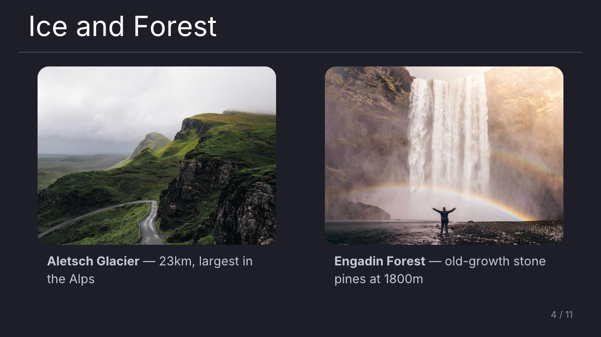

Beautiful slides.
Words to say.
Give an AI agent your source material. Get a polished deck with private speaker notes you can actually read out loud.

Start with the friction, not the feature.
“Before we built this, every update started with a blank slide. Today the agent handles the structure, so we can focus on the decision.”
Stop designing slides. Start delivering the story.
Presenter gives an agent a real job: understand the material, shape the narrative, make it look good, and write down what you should say next.
Bring the messy stuffResearch, meeting notes, git history, PDFs, screenshots — whatever you already have.
Let the agent composeIt creates a portable deck package with considered layouts, visuals, themes, and transitions.
Read the room, not your screenShare the audience window. Keep the next slide and ready-to-say notes to yourself.
“Turn our launch notes into a 10-minute update.”
Three docs, two screenshots, a repo, and one very rough outline.
sources/ + outline.mdThe launch is the story.
Slides for the audience. A script for you. One package you can run anywhere.
presentation.xml + notesYour agent does the prep. You do the presenting.
Presenter is a tiny, reliable runtime for the last mile between “the AI made a deck” and “I can confidently talk through it.” No cloud account. No locked editor. Just a portable package and two windows.
Everything that makes a deck feel finished.
Keep the creative work with the agent and the presentation mechanics with Presenter.
Polished by default
Six useful layouts, eight built-in themes, images, icons, and native charts.
Two windows
One clean audience display and one private view for notes, context, and what comes next.
Portable packages
Keep XML, images, and styles together in a shareable .slides directory.
Native charts
Bar, line, pie, and donut charts rendered from simple XML data.
Screenshot-ready
Render a slide or presenter view to PNG headlessly for docs, CI, or review.
Built for agents
A clear format spec and DTD let an AI agent create decks without guessing.
Install once. Present anything.
Presenter runs on macOS and Linux, with x86_64 and arm64 builds. Start with the included demo or ask your agent for a deck.
Read the format reference
skills/presentation.md schemas/presentation.dtd schemas/style.dtd
Install Presenter
One command detects your OS and architecture.
curl -fsSL https://corepunch.github.io/presenter/install.sh | shGenerate a deck
Ask an AI agent to create a .slides package from your material.
presenter "My Talk.slides"Share the right window
Share Presentation in Zoom, Meet, or Teams. Keep Presenter View for yourself.
Bring the source material.
Leave with the story.
Open-source, local, and designed for the moment the slides are no longer the hard part.